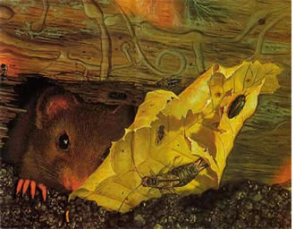

The small ears prick on the bushes,
furry buds, shoots tender and pale.
The swamp maples blow scarlet.
Color teases the corner of the eye,
delicate gold, chartreuse, crimson,
mauve speckled, just dashed on.
The soil stretches naked. All winter
hidden under the down comforter of snow,
delicious now, rich in the hand
as chocolate cake: the fragrant busy
soil the worm passes through her gut
and the beetle swims in like a lake.
As I kneel to put the seeds in
careful as stitching, I am in love.
You are the bed we all sleep on.
You are the food we eat, the food
we ate, the food we will become.
We are walking trees rooted in you.
You can live thousands of years
undressing in the spring your black
body, your red body, your brown body
penetrated by the rain. Here
is the goddess unveiled,
the earth opening her strong thighs.
Yet you grow exhausted with bearing
too much, too soon, too often, just
as a woman wears through like an old rug.
We have contempt for what we spring
from. Din, we say, you're dirt
as if we were not all your children.
We have lost the simplest gratitude.
We lack the knowledge we showed ten
thousand years past, that you live
a goddess but mortal, that what we take
must be returned; that the poison we drop
in you will stunt our children's growth.
Tending a plot of your flesh binds
me as nothing ever could, to the seasons,
to the will of the plants, clamorous
in their green tenderness. What
calls louder than the cry of a field
of corn ready, or trees of ripe peaches?
I worship on my knees, laying
the seeds in you, that worship rooted
in need, in hunger, in kinship,
flesh of the planet with my own flesh,
a ritual of compost, a litany of manure.
My garden's a chapel, but a meadow
gone wild in grass and flower
is a cathedral. How you seethe
with little quick ones, vole, field
mouse, shrew and mole in their thousands,
rabbits and woodchuck. In you rest
the jewels of the genes wrapped in seed.
Power warps because it involves joy
in domination; also because it means
forgetting how we too starve, break
like a corn stalk in the wind, how we
die like the spinach of drought,
how what slays the vole slays us.
Because you can die of overwork, because
you can die of the fire that melts
rock, because you can die of the poison
that kills the beetle and the slug.
we must come again and worship you
on our knees, the common living dirt.
© 1983 By Marge Piercy, from Stone, Paper, Knife. Used by permission of Alfred A. Knopf a division of Random House, Inc.
|
 |
|
|